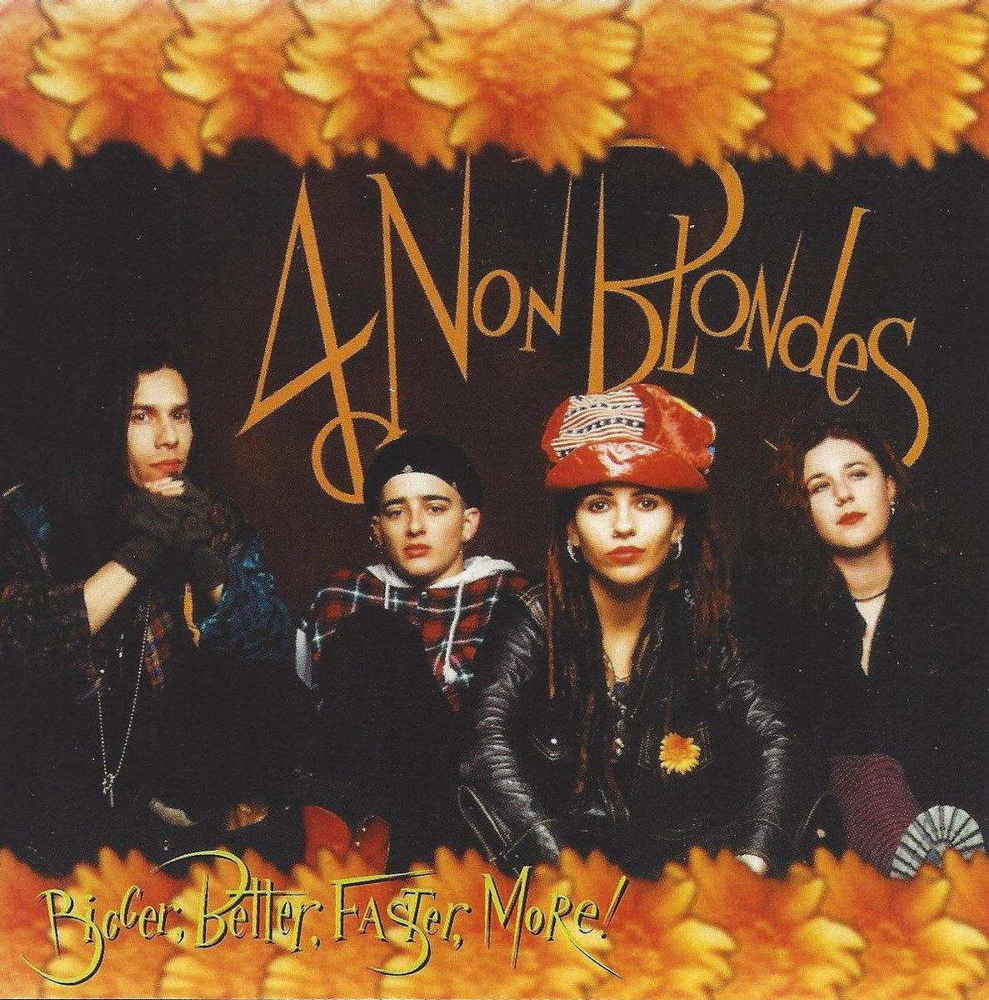
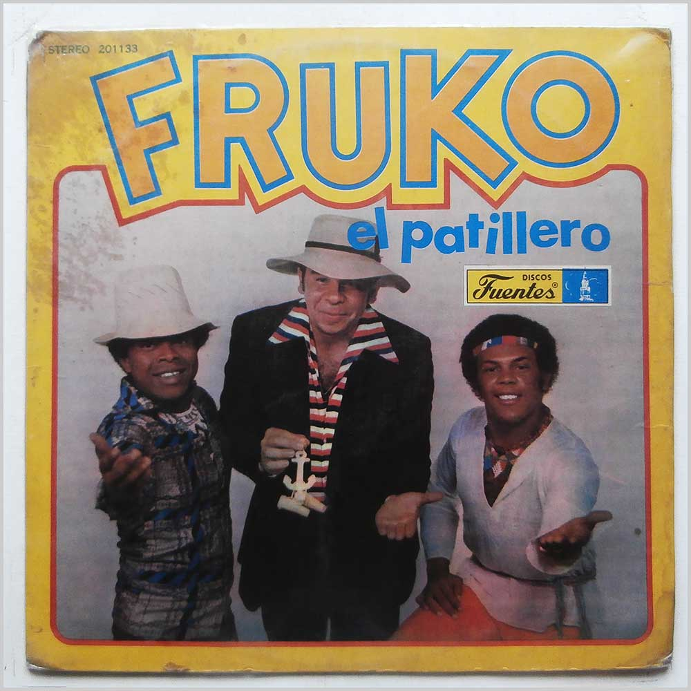
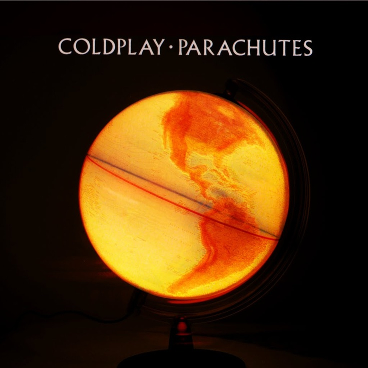

¡CIUDAD DE LA MÚSICA!
Inicio
Generos
Playlist
Descargas
Artistas Populares
  
¡Bienvenidos a "Ciudad de la Música"! Nos alegra tenerlos aquí en este espacio dedicado a los amantes de la música de todos los géneros y estilos. En nuestra página, encontrarán una comunidad vibrante donde pueden descubrir nuevos artistas, compartir sus canciones favoritas y mantenerse al día con las últimas noticias del mundo musical. Ya sea que sean músicos, aficionados o simplemente disfruten de una buena melodía, "Ciudad de la Música" es el lugar perfecto para explorar y celebrar la magia de la música. ¡Disfruten su visita y déjense llevar por el ritmo!